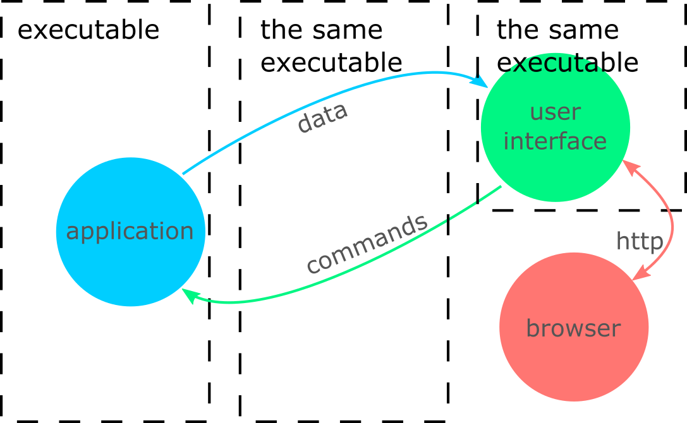
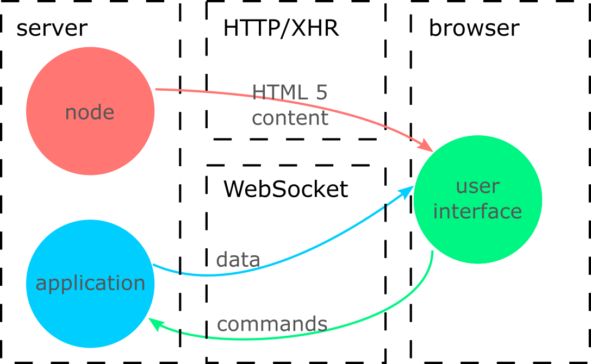
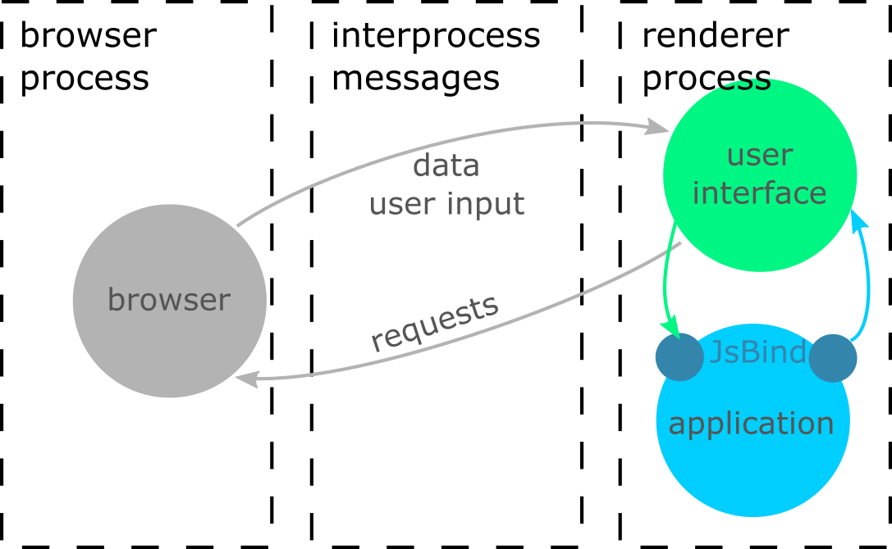

Hello, World
#include <iostream>
int main()
{
std::cout << "Hi, I'm Borislav!\n";
std::cout << "These slides are here: https://is.gd/html5gui\n";
return 0;
}
Borislav Stanimirov
- Mostly a C++ programmer
- Mostly a game programmer
- Recently a medical software programmer
- Open-source programmer
- github.com/iboB
About this talk
- Using HTML 5 for GUI in C++
- Three approaches and many variations
- More inspirational than educational
- Consider these approaches
- Maybe use them
- Some examples to help you start experimenting right away
So you want to make a GUI?
Typical user interface

Simple

Complex

Typical C++ MVC

They've come a long way

.
sophisticated optimized
powerful... ubiquitous
The last 5 slides took me 10 minutes to make
The browser is an immensely powerful presentation platform
It's our user interface to the Internet
sophisticated optimized
powerful... ubiquitous
Finding experienced and competent HTML 5 developers is easier than finding experienced and competent C++ developers
Can we make use of all that?
HTML 5 in a single slide
- It's not a single thing
- A stack of four languages
- Declarative languages define the DOM
- HTML (including SVG) - defines elements
- CSS - defines the style (appearance) of elements
- Imperative languages modify the DOM
That's what every single web page is
Including this one
What is HTML 5 development?
More than simply writing HTML, CSS, and JavaScript
Languages
- CSS (a terrible language)
- Hardly anyone writes pure CSS
- Less, Sass, many more alternatives
- JavaScript (a quite decent language)
- Many people use other languages
- TypeScript, CoffeeScript, and many more
- Asm.js and C++
- Many languages for HTML and WebAssembly
Workflows
- node.js - it's for the front end too
- Package managers: npm, yarn, webpack...
$ npm start - the ultimate build server- Debugging: Dev Tools. F12
- Frameworks: React, Vue, Angular, and more
HTML 5 Development Is Modern
Approach 1
A local HTTP server
- Start HTTP server - our C++ application
- Open browser to "http://localhost:1234"
Multi-Page Apps
- Click hyperlink. Reqest page. Server generates it and sends it.
$ python -m SimpleHTTPServer 8080- Serving dynamic content = GUI code on the server
Mult-page architecture

- Mutli-page apps are not interactive
- They are generally a bad idea
- They can qualify as a simple GUI
- The PHP programmer's GUI of choice
Single-Page Apps
- JavaScript to modifies the DOM
- No new URL on every click
- Welcome to 2004: Ajax and XHR
XMLHttpRequest. It's not for XML. Any text or binary works- Not very interactive. Everything needs to be polled
- The interactivity hack
An Ajax HXR loop
function idle() {
fetch('clientReady') // get some "fake" service resource
.then(data => {
dispatch(xhr.responseText); // dispatch and use the response
idle(); // request more from the server
})
.catch(error => console.log('Error: ' + xhr.status));
}
// ignore other xhr responses
But where is XMLHttpRequest?
The 2004 Ajax HXR loop
function idle() {
let xhr = new XMLHttpRequest();
xhr.open('GET', 'clientReady'); // get some "fake" service resource
xhr.onreadystatechange = function () {
if (xhr.readyState === 4) { // 4 = request done
if (xhr.status === 200) { // 200 = OK
dispatch(xhr.responseText); // dispatch and use the response
idle(); // request more from the server
} else {
console.log('Error: ' + xhr.status); // error
}
}
};
xhr.send(null);
}
// ignore other xhr responses
PS Do use fetch if you do Ajax
Modern Single-Page Apps
- Welcome to HTML 5: WebSocket
- The XHR loop to the next level
- Simpler and cleaner communication API
- More powerful, too
The WebSocket loop
let ws = new WebSocket('ws://localhost:7658');
ws.onopen = myOnConnectionOpenedFunc;
ws.onclose = myOnConnectionClosedFunc;
ws.onmessage = myOnMessageFunc;
ws.onerror = myOnErrorFunc;
...
ws.send('message to the server');
A continuous connection between the server and the client
Local HTTP server GUI architecture
But...
- Remember
$ npm start and the marvelous workflow
- The server is our C++ app. It needs to send HTML 5 content
- We need to reimplement npm? No
- HTML 5 developers need to give up their workflow? No
- Isntead we could...
Node Modules?

WebSockets are more powerful
let ws = new WebSocket('ws://localhost:7658');
ws.onopen = myOnConnectionOpenedFunc;
ws.onclose = myOnConnectionClosedFunc;
ws.onmessage = myOnMessageFunc;
ws.onerror = myOnErrorFunc;
...
ws.send('message to the server');
This doesn't have to be the same URL as the HTTP server
WebSocket Architecture

Adding WebSockets to a C++ app
WebSocket libraries for C++
HTTP server pros
- GUI for apps on a virtual machine
- Virtual Linux with no X Window Server demo
- Multiple sessions
- ... as long as your app supports them
- You don't have to use "localhost"
Controller in two languages

HTTP server cons
- The client is a browser
- Compile C++ to JS or WebAssembly?
- Not a single application: server(s) and a browser
- Lots of load on the network interface
- Everything goes through HTTP
- This might not be a problem on localhost
Approach 2
Embedding a browser
A browser as a library
openBrowserWindow(url)
For many platforms this is WebView
Browser architecture in a single slide
- Tabs and iframes
- Potential security issues
- Separate processes - the renderer processes
- Renderer processes are sandboxed
- State between processes = cookies
Things to consider when wrapping a browser
BRIB
- Writing code in the Browser process
- Writing code in the Renderer process
- Interprocess communication
- C++⇔JS Binding
Then it's like an HTTP server
Embedded Browser Architecture

Browser embedding in C++
QWebView - wraps native browser.
Electron
- Not a C++ library
- A WebView for JavaScript
- node.js for GUI
- Same API
- Same Native modules
- Everything (the BRIB) is node.js-like JavaScript
- A JavaScript programmer's dream come true
- It can still work for you
Qt WebEngine and CEF
- Good Chromium wrappers
- Almost the exact same features
- The main difference is the license
- More good Words about CEF
- C interface
- Java, .NET, Go, Python...
- Electron used to be CEF
- CEF Echo demo
- CEF File system browser demo
- JsBind - gh/Chobolabs/jsbind
Yet more variants
- Putting it inside existing UI. Qt WebEngine is the winner
- Custom rendering
- Everything must be in the browser. Or...
- Render offscreen. Send to browser
- Get the browser screen. Demo
- Lots of load on interprocess communication
- Everything in the renderer process
- Don't forget to turn off sandboxing
- Synchronous CEF demo
- Share memory
Renderer Process Application

Browser embedding pros
- Controller code in C++
- Combine browser GUI with other GUI
- Ability to work entirely in the renderer process
Browser embedding cons
- The fancy workflow is lost
- Except Dev Tools. Remote Dev Tools demo
- Mocking is (often) your friend. FS-Browser uses mocking
- Debugging multiple processes is harder
- Tooling to the rescue
- Single-process mode. Use with caution
- We want to go faster
- Custom rendering
- Syncrhonous coms and sharing memory
- Sharing video memory
Approach 3
Custom HTML renderers
Typically game-dev territory
Take the rendering process out of the browser
Characteristics
- Similar to many GUI libraries
- Graphics only
- Bring Your Own Renderer
- At least some DOM and API changes
<img src=id123 />
(Almost) Complete Solutions
Partial Solutions
- Qt Quick/QML - Qt. Custom HTML/CSS Custom DOM
- sciter - Quite poweful. No JS. Free without source and support
- libRocket - FOSS. Dead: lives in forks. Custom DOM. No JS.
- RmlUi - FOSS. Custom HTML/CSS. Custom DOM. No JS.
- litehtml - FOSS. No DOM. No JS.
Approach 4
C++ ⇒ WebAssembly or asm.js
Just for completeness
Join me in Crest 3 at 20:30 for more